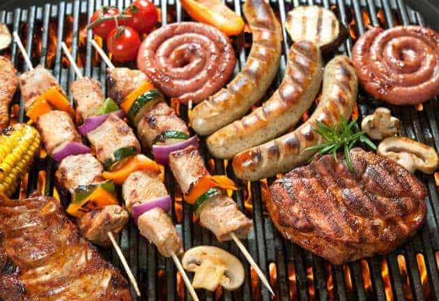

BRAAI-MEAT
To “braai” or barbeque (Bar-B-Q) meat is a South African tradition. We usually do it once or twice a week, probably more. It’s a chance to get your friends and/or family together, sip some wine or down a couple of cold ones.
In this Instructable, I am going to show you how, with a little preparation and some scientific genius, you can “braai” like an expert and serve up the most succulent meat. What you will need: Some red meat, preferably rump, fillet or sirloin. I got rump. Some Pineapple juice Some Balsamic Vinegar Salt Pepper Coriander Other Spices Dish Fork.WHERE WILL YOU FIND THEM
You will find the braai-meat at pen E22, right next to the san diago.
Today's menu:
- 9h00am : worse and steak
- 12h00am : steak
- 15h00am : worse and steak